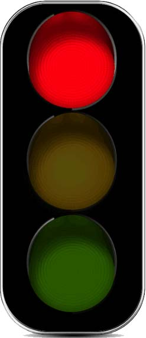

<!DOCTYPE html>
<html>
	<head>
		<meta charset="utf-8">
		<title>思维上升到面向对象01:红绿灯</title>
	</head>
	<body>
		<style type="text/css">
			#box img{
				width: 80px;
			}
		</style>
		<div id="box"></div>
		<!--  -->
		
		<script type="text/javascript">
			
			//定义红绿灯类，构造函数，父类
			function TrafficLight() {
				//颜色属性，一开始都是红色
				this.color = 1; //1.jpg是红灯
				//调用初始化方法，只有当这个构造器被 new 实例的时候，方法生效
				this.init();
				//this指被new的js实例
				//调用绑定监听
				this.bindEvent();//this指被new的js实例
				
			}
			
			//初始化方法：创建图片img
			TrafficLight.prototype.init = function () {
				//创建一个Dom节点，并用 属性dom 接收；//this指被new的js实例
				this.dom = document.createElement('img');
				//设置创建的dom节点的Src属性
				this.dom.src = 'DOM_Case/images/deng/'+this.color+'.jpg';
				//上树，添加到页面上
				box.appendChild(this.dom);
			}
			
			//绑定监听对象
			TrafficLight.prototype.bindEvent = function () {
				//备份上下文,this指被new的js实例
				var self = this; 
				//当dom属性内的dom节点被点击的时候
				this.dom.onclick = function () { //this指向发生改变
					//当被点击的时候，调用自己的changeColor方法
					self.changeColor();
					//对象调用函数，符合上下文一，this指向对象
					
				}
				
			}
			
			//改变颜色
			TrafficLight.prototype.changeColor= function () {
				//改变new实例的color属性
				this.color++;
				if(this.color == 4){
					this.color = 1;
				}
				//通过color的变化，影响 src的变化
				this.dom.src = 'DOM_Case/images/deng/'+this.color+'.jpg';
			}
			
			
			//得到盒子
			var box = document.getElementById('box');
			
			
			//实例化 100个对象
			var count = 100;		
		while (count--){
			//while循环中，()需要布尔值，存在隐式转换，--到0，0为false;
				new TrafficLight();
			}
		
			
		</script>
		
	</body>
</html>
